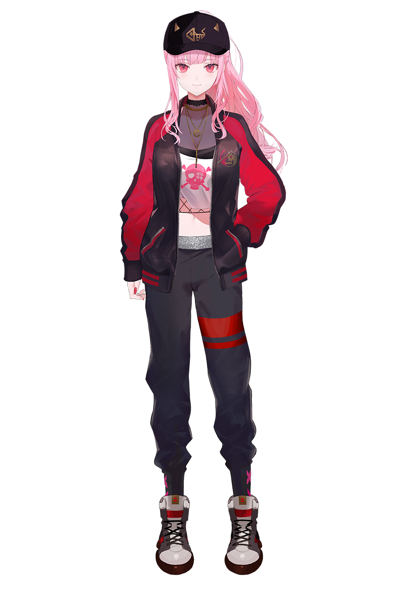
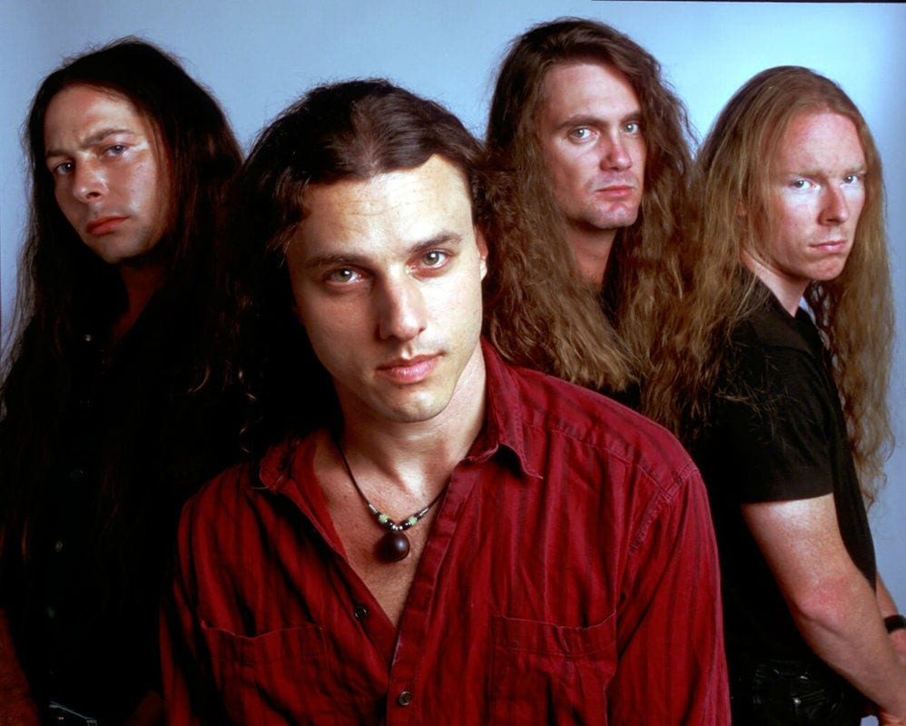
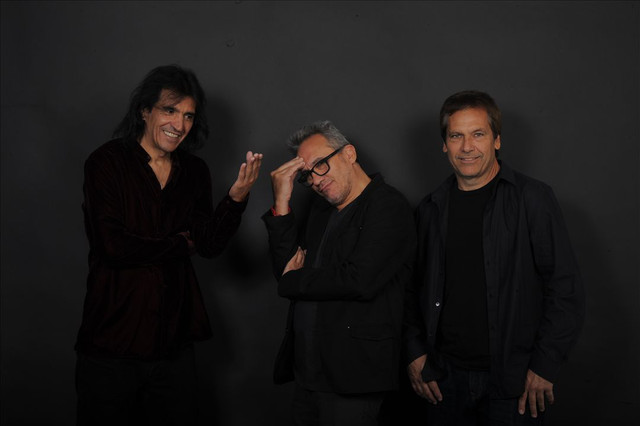
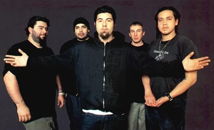
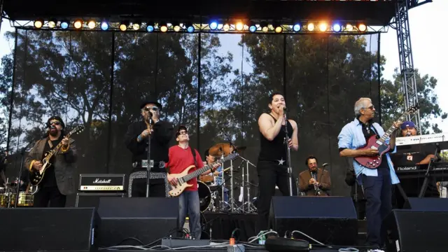
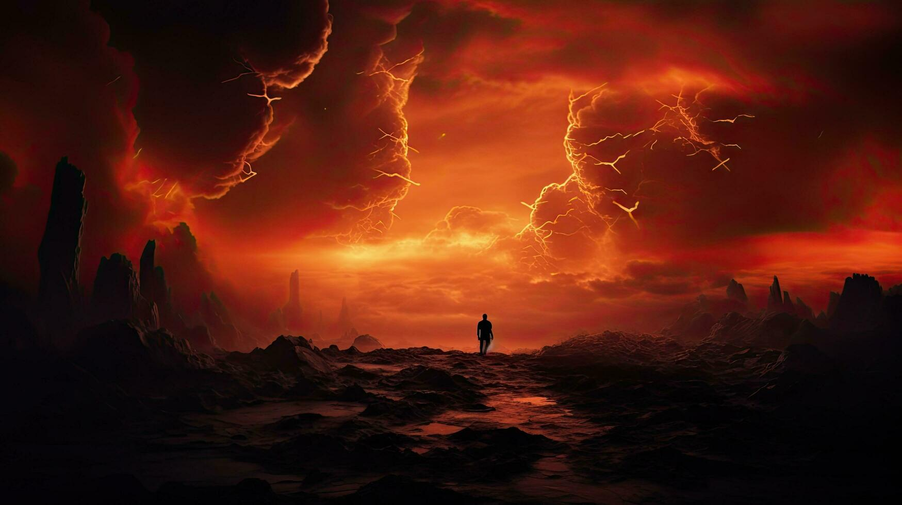
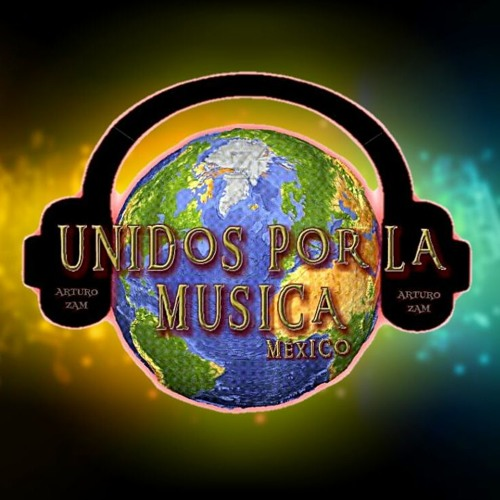
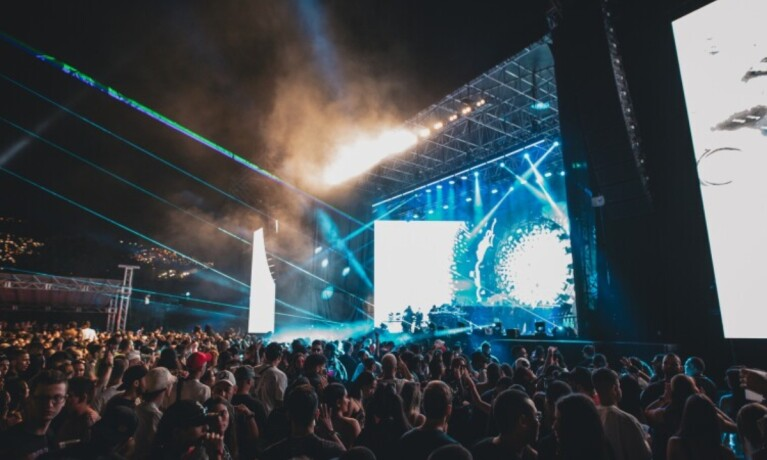

En un mundo donde la música se entrelaza con la realidad, cuatro bandas legendarias se preparaban para un evento sin igual: el festival de rock más grande jamás organizado. Moricalioppe, con su sonido explosivo y letras cargadas de crítica social, encabezaba el cartel. Su presencia era un símbolo de resistencia, un grito de guerra que resonaba entre las almas rebeldes.
A su lado, los titanes del death metal se alzaban como guerreros en una batalla épica. Su música, cruda y visceral, era una tormenta de acordes y gritos desgarradores que sacudían la tierra. Cada riff era un trueno, cada golpe de tambor un relámpago, creando una atmósfera de pura adrenalina que hacía vibrar los corazones de miles de fanáticos.
Pero no todo era oscuridad y poder. Desde el fondo del escenario, los Enanitos Verdes traían un aire de frescura y nostalgia. Con su fusión de rock y melodía, sus letras evocaban recuerdos de amores perdidos y sueños olvidados. Eran los poetas del festival, sus canciones tejían historias que resonaban en la mente y el alma de quienes los escuchaban. Su energía vibrante era la chispa que iluminaba la noche.
Finalmente, Deftones, con su mezcla única de rock alternativo y metal, se preparaba para cerrar el festival. La banda, como un volcán a punto de estallar, prometía un espectáculo que dejaría a todos sin aliento. Chino Moreno, con su voz etérea, guiaba a la multitud a través de un viaje sonoro que exploraba las profundidades de la emoción humana. Sus melodías, tanto suaves como agresivas, se entrelazaban en una danza hipnótica que dejaba a todos anhelando más.
A medida que el sol se ponía en el horizonte, la energía del festival alcanzaba su punto máximo. Las luces brillaban intensamente, el aire se llenaba de vibraciones y el clamor de la multitud resonaba como un unísono poderoso. Cada banda, con su estilo único, contribuía a una experiencia musical inolvidable.
Cuando Moricalioppe se subió al escenario, el público estalló en vítores. Con su mensaje audaz y provocador, se convirtió en la voz de una generación, mientras los riffs de los titanes del death resonaban como ecos de un pasado oscuro que no se debía olvidar. Los Enanitos Verdes seguían la marcha, sus melodías suaves contrastando con la ferocidad del metal, creando un equilibrio perfecto entre fuerza y vulnerabilidad.
Finalmente, Deftones tomó el escenario. El sonido de su música, etéreo y poderoso, llenó el aire, llevándolos a un clímax indescriptible. La multitud se convirtió en una masa de movimiento, una sola entidad unida por el amor a la música. En ese instante, todos los asistentes, sin importar de qué banda fueran fanáticos, se convirtieron en uno solo, un tributo a la música que une.
Así, en una noche épica, el festival se convirtió en un hito en la historia del rock, un recuerdo eterno que resonaría en las almas de todos los presentes, una celebración de la diversidad musical y la pasión que une a los seres humanos.
